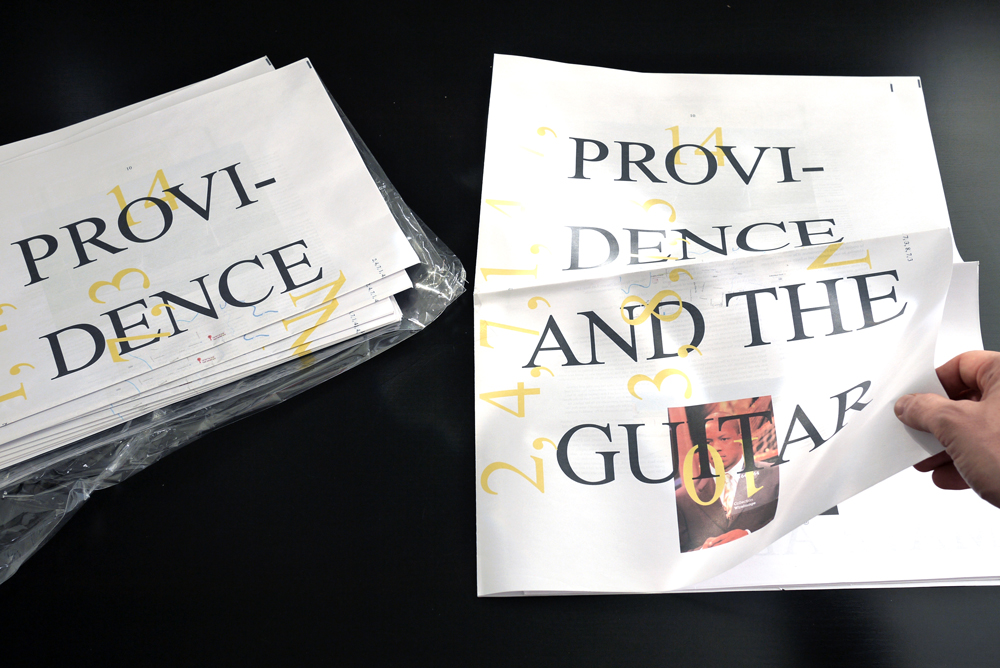
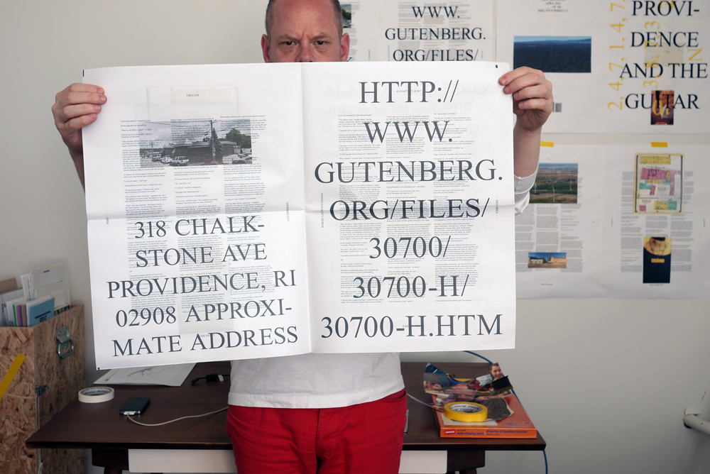
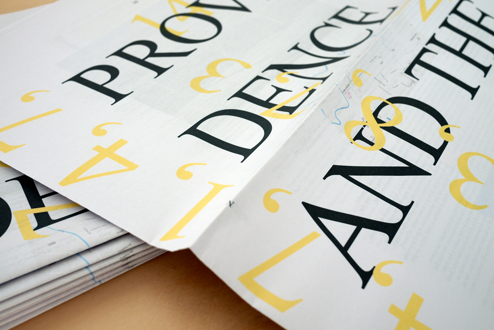
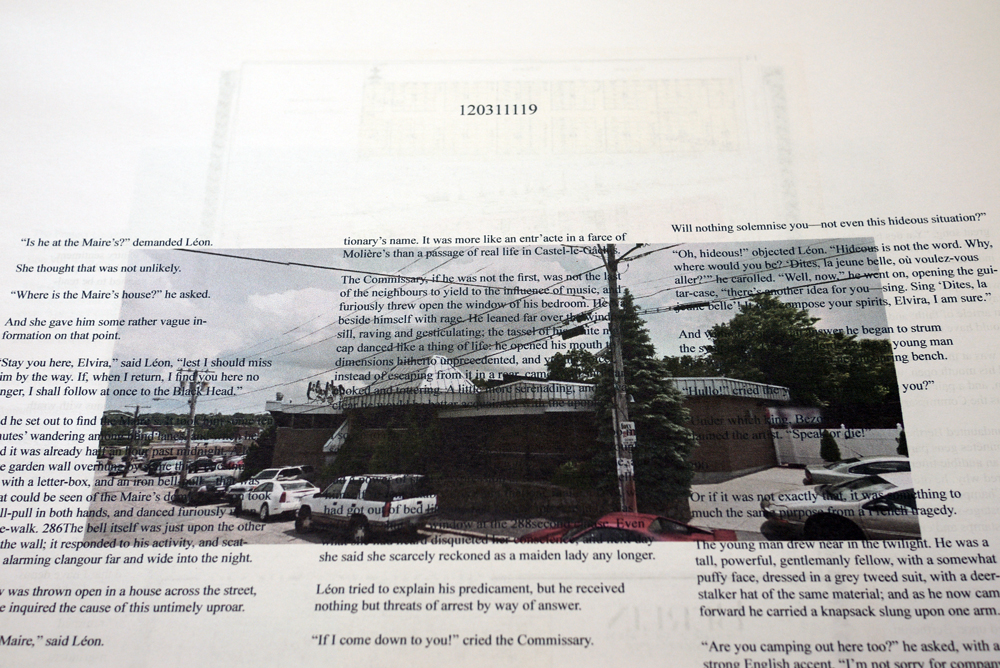
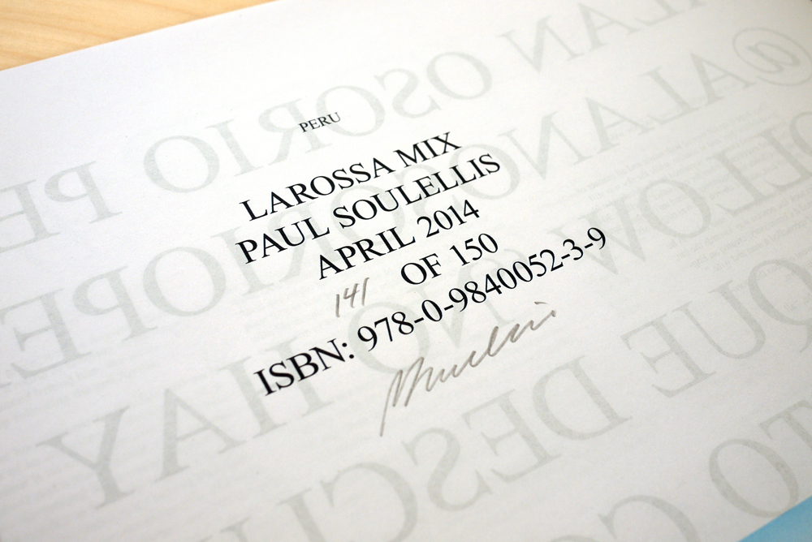
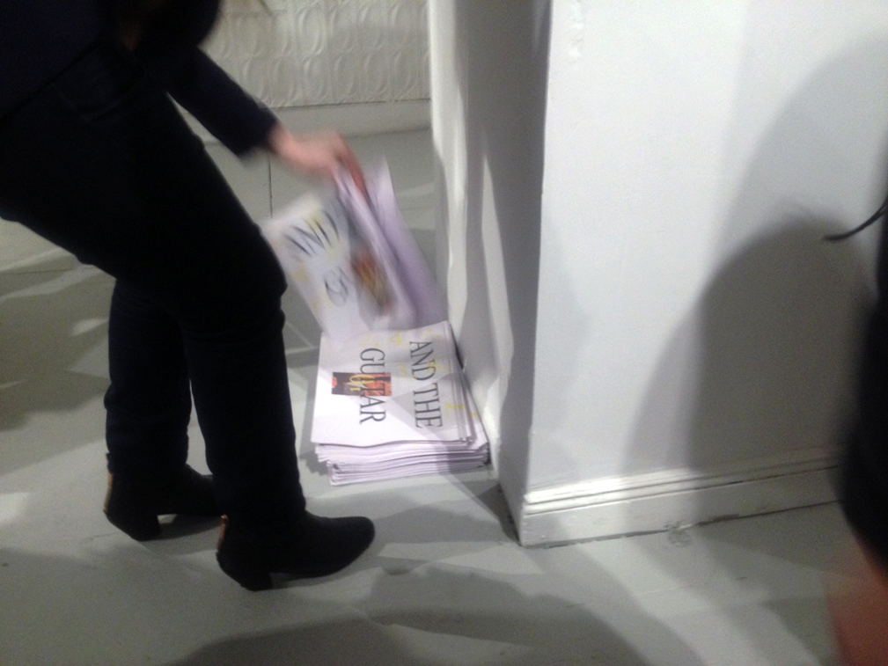

LaRossa Mix (2014)

This is a score for generating a publication that contains three categories of content (A, B, C) drawn from eight openly accessible web archives. The publication may be any size and contain any number of pages. To begin, chance-determine the number and order of web objects types, plus a single search term to generate the first one. Use residual terms, coordinates, numbers and other elements generated by each search to feed subsequent searches, from one object to the next, until all web objects have been collected. It is the business of the artist to arrange the objects in order, 2–3 objects per page, as desired. Incorporate all residue into publication. Produce a small edition and give away all copies.
A Geographic (1 Google Street View, 2 Maps, 3 Earth)
B Image (4 Getty Images, 5 Google Images)
C Text (6 Wikipedia, 7 Twitter, 8 Project Gutenberg)
Loosely inspired by Williams Mix (1951–53), John Cage.
Broadsheet newsprint, 8 pages
Print-on-demand
Edition of 150, signed and numbered
ISBN 978-0-9840052-3-9
#1–130 (“PROVIDENCE AND THE GUITAR”) published and installed for takeaway at “Undefined by Design,” curated by Brian LaRossa, Lorimoto Gallery, Brooklyn, 12 April, 2014.




